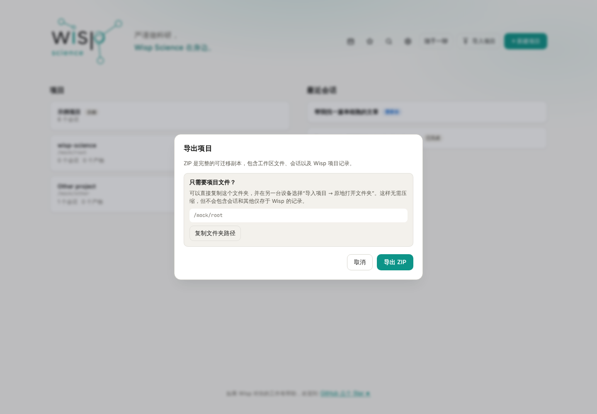
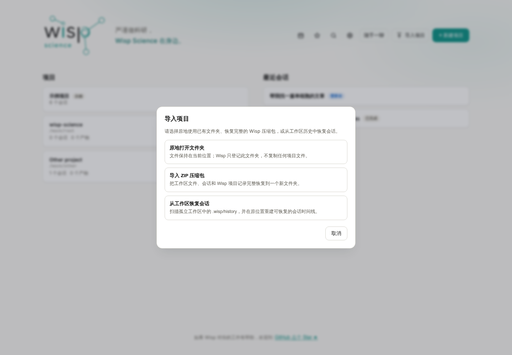
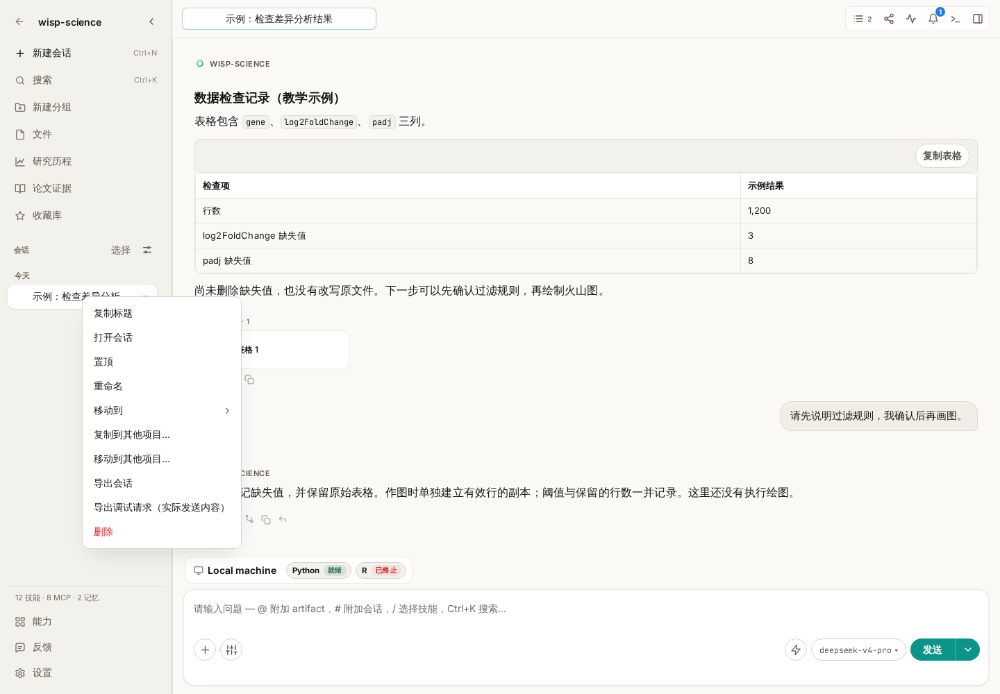
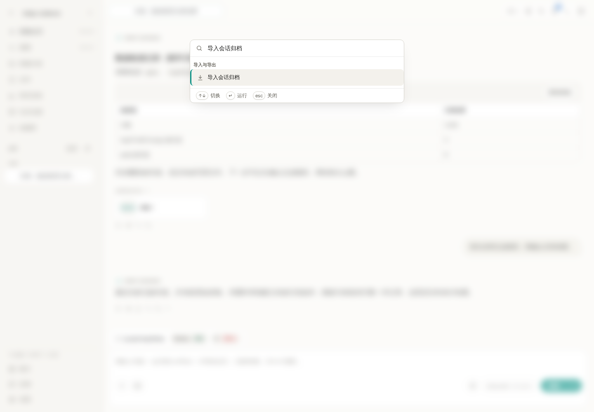
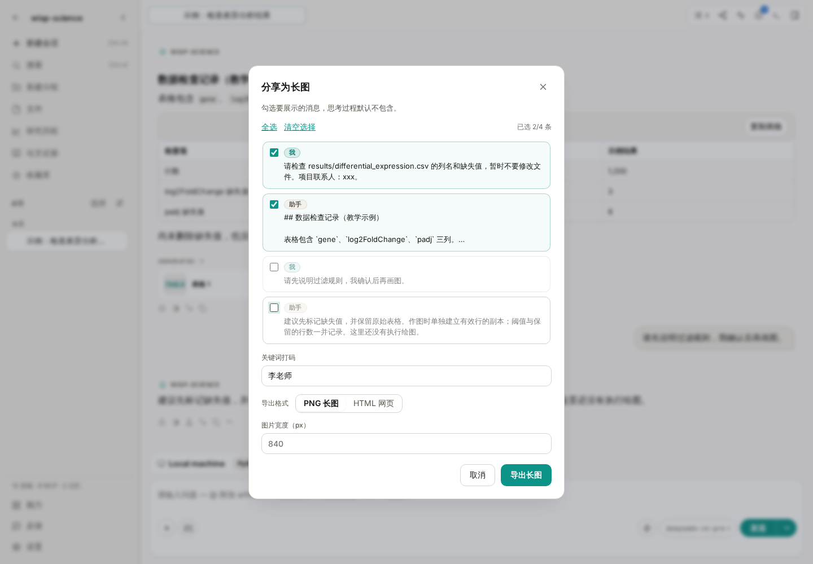

Wisp Science基础入门：导入、导出与分享
查看原文一项分析做完后，经常会遇到三个不同的需求：换台电脑继续整个项目，把某一次对话交给同事，或者只把一段结果发到组会群里。
Wisp Science 为这些需求提供了不同入口。选对导出范围，后续导入和阅读会方便很多。这篇文章按“整个项目 → 单个会话 → 部分消息”的顺序介绍，并说明每种方式能带走什么。
本文配图来自实际前端，使用演示项目和教学会话。表格中的数字、项目路径与联系人均为示例，不代表真实实验结果或已完成的迁移。
先决定要交付什么，再选择导出方式。
| 需求 | 选择什么 | 接收方怎样使用 |
|---|---|---|
| 换电脑继续整个项目 | 项目 ZIP | 在 Wisp 的“导入项目”中恢复 |
| 只交接一段完整会话及可导出的关联产物 | 会话 ZIP | 在目标项目中使用“导入会话归档” |
| 展示会话中的几条消息 | 分享为 PNG 长图或 HTML | 用图片查看器或浏览器阅读 |
| 检查完整执行过程 | 轨迹导出 HTML | 阅读调用、结果、耗时和用量记录 |
项目 ZIP 和会话 ZIP 虽然扩展名相同，内容格式和导入入口不同。分享 HTML 与轨迹 HTML 也是阅读材料，不能当作会话归档导回 Wisp 继续对话。
导出整个项目，适合迁移和完整交接。
先等当前项目的活动对话和任务结束。然后在项目卡片上点击 导出项目，也可以打开项目后使用 文件 → 导出当前项目。

图 1：只要普通文件时，可以自行复制项目文件夹；需要一起带走 Wisp 中的会话和项目记录时，选择完整 ZIP。
选择 导出 ZIP 和保存位置后，右下角会显示处理阶段、文件数量、大小和当前路径。等待导出完成，再复制生成的 ZIP。
导出期间，源项目会临时只读；其他项目仍可使用。不要把尚未完成或仍为空的目标文件发给接收方。
项目包包括工作区里的普通文件，以及项目拥有的会话、产物、Run、计划、溯源和研究图谱记录。它不会一并携带：
- 模型 API 密钥、其他密钥环秘密和全局模型配置。
- 这台电脑的 SSH／WSL 环境配置。
- 外部 ACP Agent 正在运行的进程状态。
- 远程引用背后的整份服务器数据。
因此，接收方恢复项目后，仍需要配置自己的模型和服务器。远程路径可以作为引用保留，但不会因为 ZIP 导入就自动获得访问权限。
导入整个项目，先区分 ZIP 与普通文件夹。
在项目首页点击 导入项目，可以看到不同的导入方式。

图 2：已经复制到本机的文件夹，可以原地打开；Wisp 导出的完整项目 ZIP，应走 ZIP 导入入口。工作区会话恢复是另一种应急方式。
迁移完整项目时：
- 选择 导入 ZIP 压缩包，打开 Wisp 导出的项目 ZIP。
- 选择本机父目录，Wisp 会在其中创建项目目录。
- 等待右下角导入进度完成，再从项目页打开。
- 核对会话、脚本、图表和关键数据路径，再配置目标机器需要的模型与环境。
如果手里只是普通文件夹，选择 原地打开文件夹。它登记的是这个现有位置，不会复制一份新工作区；只复制文件夹，也不能恢复仅存于另一台设备数据库中的完整会话记录。
当原来的应用数据库和完整项目包都丢失，但工作区还在时，才考虑 从工作区恢复会话。它尝试读取工作区保存过的历史快照，并不是每条普通对话都一定能找回。
同一台设备重复导入相同项目 ID 会被拒绝，不会自动合并两个项目。需要经常切换设备时，可以进一步了解手动项目同步。
只交接一个会话，在会话列表里导出。
打开项目，在左侧找到目标会话。右键点击会话，或打开它的会话操作菜单，选择 导出会话。

图 3：入口属于左侧会话条目。右键点击正文的一段普通文字，不会打开同一个会话导出菜单。
选择保存位置后，会得到会话 ZIP。包中包含消息记录、便于阅读的 Markdown 文本、工具调用记录，以及能够收集到的关联产物和相应信息。
这里导出的是会话记录及其关联文件，不能把它当作整个项目的压缩包。某个文件只在正文中被提到、实际位于远程，或者已经从本机删除时，不要默认它的内容一定被打包。
准备交接分析时，可以先要求 Wisp 列一份清单：
请根据这段会话整理交接清单，列出实际读取的输入文件、生成的脚本和结果文件，以及仍需另行提供的数据。每项标明本地或远程路径；不能确认存在的文件请明确标注。
再把清单与导出包核对。需要交付项目中的其他输入文件时，另外提供这些材料，或改用完整项目导出。
导入会话归档，要先打开接收它的项目。
进入目标项目，打开 编辑 → 导入会话归档。也可以按 Ctrl+P（macOS 为 Cmd+P），搜索“导入会话归档”。

图 4：这条命令将会话导入当前项目。选择的是“导出会话”生成的 ZIP，不是项目 ZIP 或分享 HTML。
选择 ZIP 后，首次导入的会话会归入 imported 分组。打开它，核对消息是否完整，再检查关联产物能否读取。
产物的原相对路径安全且没有冲突时，会尽量恢复到相应位置。遇到路径冲突等情况，可能改放到 imports/<会话标识>/ 下；无法恢复的文件会被报告。导入后应查看实际位置，不要照着旧消息里的绝对路径直接运行。
单会话导入主要恢复消息与可提取的产物，不会重建所有项目级记录，也不会把归档中的执行溯源自动变成目标数据库里的运行记录。它同样不会恢复正在运行的 Python／R 内存、SSH 终端或 ACP 进程。
重复导入同一来源会话时，可能更新已有导入记录，或显示跳过；这不是双向合并工具。两边都继续了不同内容时，先保留各自备份，再决定怎样交接。
只分享部分内容，打开“分享为长图”。
如果只是向同事展示一次解释、一个结果表或几轮讨论，可以使用会话顶部的分享按钮，也可以在输入框发送 /share。

图 5：示例只保留前两条消息，并将“李老师”设为打码关键词。被取消勾选的后续讨论不进入这次分享。
操作顺序可以是：
- 勾选要分享的消息，取消不需要的部分。
- 在打码关键词中填写姓名、内部项目代号等需要替换的文字，检查预览。
- 选择 PNG 或 HTML。
- PNG 可调整图片宽度；HTML 保存为网页文件。
- 导出后，用相应查看器打开，确认文字、表格和公式是否清晰。
这个选择以“消息”为单位，不是任意圈选一句话。用户消息和助手回复默认选中，思考内容默认不选；工具调用和用量记录不作为普通分享消息列出。
| 格式 | 适合什么场景 | 使用前检查 |
|---|---|---|
| PNG 长图 | 发到群聊、插入组会材料 | 长度是否合适，小字是否清楚 |
| HTML 网页 | 用浏览器阅读较长讨论或结果表 | 文件能否打开，外部链接与图片是否仍可访问 |
关键词打码作用于这次分享副本，不会修改原会话。它按填写的文字替换，不能自动识别所有敏感信息，也不会替你擦除嵌入截图里的文字；导出后仍要检查一次。
点击导出只是保存文件，不会自动上传到公众号、群聊或其他平台。需要发送时，由你选择接收方。
分享结果和保留过程，可以一起做。
给同事看结论时，可以导出几条关键消息；需要一起排查错误时，再补充轨迹 HTML。如果对方要在 Wisp 中继续分析，则提供会话 ZIP 或项目 ZIP，并补齐输入文件和环境信息。
第一次练习，可以在一个小型练习项目里建立两轮对话，分别尝试：导出项目、导出并导入一段会话、只分享其中一问一答。核对三种文件的打开方式后，再用于正式交接。
遇到问题，先核对归档类型与实际范围。
| 现象 | 优先检查 |
|---|---|
| ZIP 导入提示格式不对 | 项目 ZIP 是否误用了会话导入入口，或反过来 |
| 复制文件夹后找不到会话 | 是否只复制了文件，没有迁移数据库中的项目记录 |
| 导入后某个文件打不开 | 是否原本是远程引用、包内缺失，或因冲突改到了 imports/ |
| 导入后不能继续运行 | 目标机器的模型、解释器、依赖和服务器是否重新配置 |
| 想把分享 HTML 导回会话 | HTML 用于阅读；继续对话需要会话 ZIP |
| 分享里没有工具调用细节 | 改用轨迹 HTML 检查执行过程 |
| 导出图太长或文字太小 | 减少选中消息，或调整宽度；长内容可以选 HTML |
项目迁移规则参见 Wisp 项目导出与导入，分享入口见 Wisp 基础配置。本文依据撰写时的项目实现整理，不同版本的界面文字可能略有差异；示例提示词不代表已经执行的文件检查。